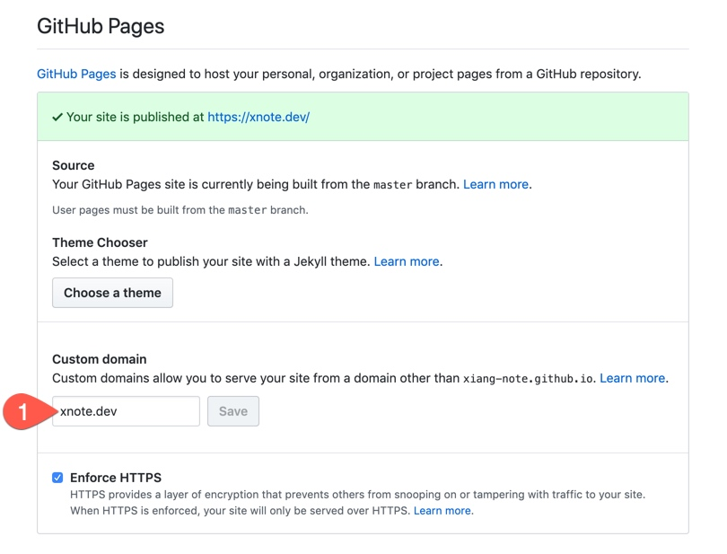
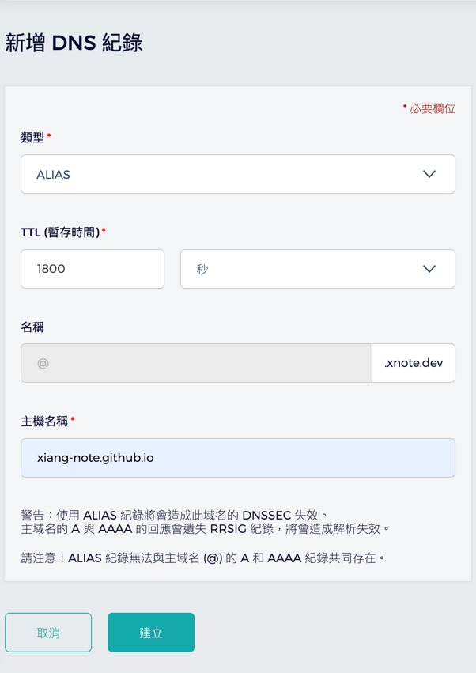
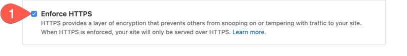

在 Github Pages 使用自訂 Domain
考量到未來維護及延續性，決定買了一個新網域 xnote.dev 來替換掉醜醜的 xiang-note.github.io。
事前準備
先準備一個網域名稱
可以從 GoDaddy、NameCheap、Google Domains、Gandi 等等域名服務商購買。
以前用過大大小小的域名服務商，這次想嘗試不同介面體驗看看。
原本想要從 Google Domains 購買，但是目前臺灣不在開放名單中，又不想亂填地址只好選擇其它方案。
設定 CNAME
設定 CNAME 有兩種方式
第一種
在 Repository 裡增加一個名為 CNAME 檔案，並在裡面打上想對應的網域名稱
cd xiang-note.github.io
# ~/xiang-note.github.io
echo "xnote.dev" > CNAME
第二種
在 Github Repository 中

- 點擊
Settings頁面

- 在
Custom domain打上對應的網域名稱
設定 DNS 對應到 GitHub Pages
可以依據這篇的說明進行設定 Using a custom domain with GitHub Pages
由於我這次是使用 apex domain，可以透過 ALIAS、ANAME、A 來設定，就看 DNS 服務商 有提供哪些來決定使用哪個。
新增 Record
最推薦是使用 ALIAS，剛好這次使用的 DNS 服務商 有提供

此動作可能要等候一段時間讓
DNS同步才會生效
進行驗證
透過 dig 指令來檢查
dig +noall +answer xnote.dev
> xnote.dev. 2118 IN A 185.199.108.153
> xnote.dev. 2118 IN A 185.199.111.153
> xnote.dev. 2118 IN A 185.199.109.153
> xnote.dev. 2118 IN A 185.199.110.153
如上述顯示即代表設定成功
對應 IP
185.199.xxx.153可能會調整，實際以GitHub Pages文件為主
設定 HTTPS
使用 GitHub Pages 設定 HTTPS 非常簡單，只要打開設定就完成了。
進行設定
在 GitHub Repository 的 Settings 頁

- 打開 Enforce HTTPS
進行驗證
使用瀏覽器打開 https://xnote.dev 查看憑證是否設定成功

- 點擊鎖型符號
- 點擊憑證

憑證設定成功
結論
GitHub Pages整合的非常好，只要網頁點點設定就可以處理好一堆原本複雜的事情。- 設定
DNS時，使用dig指令很快就抓取到設定，但是GitHub花了點時間等才抓到，需要等待一下